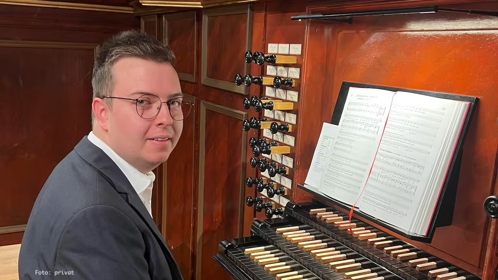

Regionalkantor Felix Günther

Felix Günther (*2001) stammt aus der Nähe von Würzburg und erhielt bereits im Alter von sieben Jahren seinen ersten Klavierunterricht. Während seiner langjährigen Zugehörigkeit zu den Würzburger Domsingknaben wuchs in ihm der Wunsch, zusätzlich das Orgelspiel zu erlernen.
Nach dem Abschluss der Mittleren Reife besuchte er von 2017 bis 2020 die Berufsfachschule für Musik in Bad Königshofen, die er als staatlich geprüfter Ensembleleiter sowie mit der C-Prüfung erfolgreich abschloss. Anschließend studierte er von 2020 bis 2024 Kirchenmusik an der Hochschule für Musik Würzburg in der Klasse von Prof. Christoph Bossert und seit 2022 zusätzlich historische Tasteninstrumente bei Prof. Ralf Waldner. Von 2024 bis 2026 studierte er an der Hochschule für Musik FRANZ LISZT in Weimar und schloss sein Studium dort mit dem Kirchenmusik-A-Diplom bei Prof. Martin Sturm und Nicola Proccacini ab.
Meisterkurse unter anderem bei Gunther Rost, Christoph Mantoux und Edoardo Bellotti ergänzen seine musikalische Ausbildung.
Seit dem 1. Juni 2026 ist Felix Günther Regionalkantor der Südregion des Bistums Hildesheim mit Dienstsitz an der Basilika St. Cyriakus in Duderstadt.